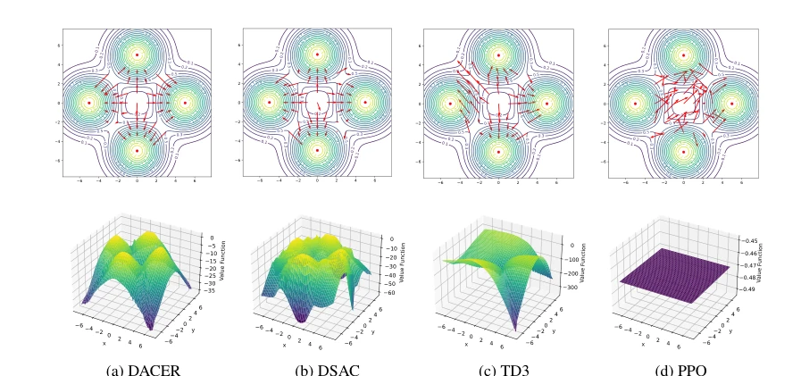
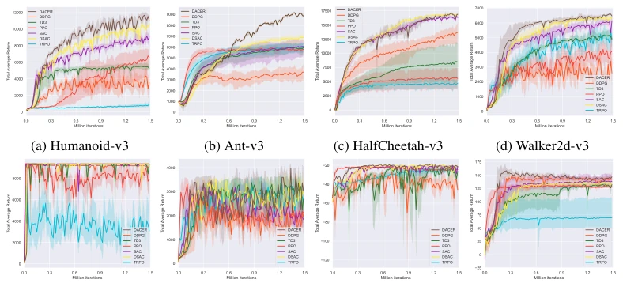
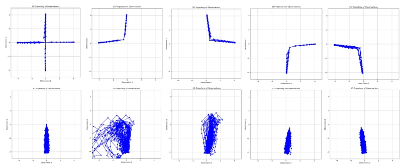
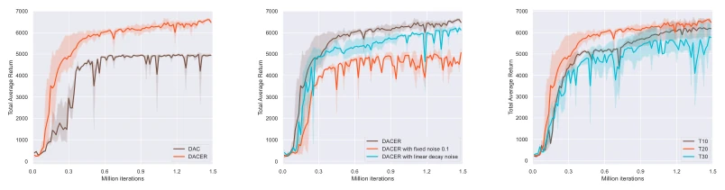
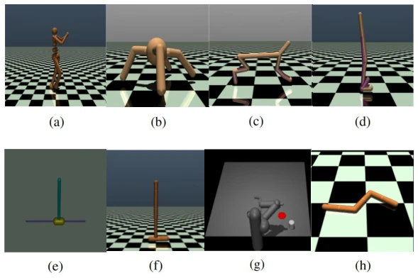

This paper integrates diffusion models into online reinforcement learning, attempting to solve the problem where Gaussian policies cannot handle multimodality. DACER tops the leaderboard on MuJoCo, is indeed impressive, proving the representational capability of diffusion policies. However, the so-called "entropy regulation" is actually a stopgap measure; estimating entropy using GMM and then inferring the noise coefficient involves high computational overhead (40ms) and must be calculated once every 10,000 steps, still far from true maximum entropy RL. The authors treat the reverse diffusion process as a policy function; the idea is quite unconventional, but essentially it is a variant of Actor-Critic. For tasks requiring real-time interaction, this method is more flexible than pure imitation learning (such as Diffusion-QL), but inference speed may not be as good as traditional policies. Overall, it is a good engineering improvement, but the theoretical depth is slightly insufficient, belonging to the typical "trading compute for performance". Published at NeurIPS, indicating the community's enthusiasm for diffusion + RL remains undiminished, but inference latency must be considered during deployment.
Traditional RL algorithms (such as DDPG, PPO, SAC) typically parameterize policies using diagonal Gaussian distributions, which leads to policies being unable to effectively model multimodal distributions, easily falling into local optima or mode coverage issues [16, 43, 45]. Although diffusion models perform excellently in generation tasks and can fit complex distributions, directly applying them to online RL faces two major challenges: first, the lack of an analytical entropy expression makes entropy regularization difficult; second, how to seamlessly integrate with existing Actor-Critic frameworks. Existing offline diffusion policies (such as Diffusion-QL) rely on behavior cloning and cannot be directly migrated to online RL [43]. Existing online diffusion RL methods (such as Action Gradient) have low training efficiency or find it difficult to learn gradients and imitation simultaneously [45]. Therefore, an algorithm is needed that can utilize the multimodal capabilities of diffusion models while enabling efficient online optimization. Especially for physical control tasks, online interaction capability is crucial, and offline methods are not applicable.
方法Method
DACER的核心是将扩散模型的反向过程重构为策略函数。首先，策略πθ(a|s)定义为条件扩散的反向采样链，从纯噪声逐步去噪生成动作，利用其强大的多模态表示能力。其次，优化目标直接最大化期望Q值，无需行为克隆项，使其能融入主流Actor-Critic框架。针对扩散策略熵不可解析的问题，作者提出用高斯混合模型（GMM）拟合状态下的动作采样分布来估算熵。基于估算熵，学习一个参数α来自适应调节输出动作上的噪声方差（a = a + λα·N(0, I)），从而平衡探索与利用。训练时，Critic网络使用Double Q-learning更新，Actor网络通过梯度回传优化Q值，并定期更新熵调节参数。这种方法避免了复杂的梯度匹配，直接通过噪声调节实现熵控制。
The core of DACER is reconstructing the reverse process of the diffusion model as a policy function. First, the policy πθ(a|s) is defined as a conditional diffusion reverse sampling chain, generating actions by denoising step-by-step from pure noise, utilizing its powerful multimodal representational capability. Second, the optimization objective directly maximizes the expected Q-value, without a behavior cloning term, allowing it to integrate into mainstream Actor-Critic frameworks. Addressing the issue that diffusion policy entropy is not analytically tractable, the authors propose using a Gaussian Mixture Model (GMM) to fit the action sampling distribution under states to estimate entropy. Based on the estimated entropy, a parameter α is learned to adaptively regulate the noise variance on the output actions (a = a + λα·N(0, I)), thereby balancing exploration and exploitation. During training, the Critic network is updated using Double Q-learning, the Actor network optimizes the Q-value through gradient backpropagation, and the entropy regulation parameters are updated periodically. This method avoids complex gradient matching and achieves entropy control directly through noise regulation.

Figure 2: Policy representation comparison of different policies on a multimodal environment. The first row exhibits the policy distribution. The length of the red arrowheads denotes the size of the action vector, and the direction of the red arrowheads denotes the direction of actions. The second row shows the value function of each state point.
Evaluated on 8 MuJoCo tasks and multi-task scenarios. Baselines include DDPG, TD3, PPO, SAC, DSAC, TRPO. The metric is average return. Results show DACER achieves SOTA on most tasks, with significant improvement in Humanoid. In multi-task scenarios, DACER can learn symmetric four peaks, proving its multimodal representation is superior to DSAC and PPO. Ablation studies show that the entropy regulation mechanism and adaptive noise factor are crucial for performance; fixed noise or linear decay perform poorly. Performance is optimal at diffusion steps T=20; too many will cause gradient explosion. Additionally, the code is open source, with good reproducibility.

Figure 1: Training curves on benchmarks. The solid lines represent the mean, while the shaded regions indicate the 95% confidence interval over five runs. The iteration of PPO and TRPO is measured by the number of network updates.

Figure 3: Multi-goal multimodal experiments. We selected 5 points that require multimodal policies: (0, 0), (-0.5, 0.5), (0.5, 0.5), (0.5, -0.5), (-0.5, -0.5), and sampled 100 trajectories for each point. The top row shows the experimental results of DACER, another shows the experimental results of DSAC.

Figure 4: Ablation experiment curves. (a) DAC stands for not using the entropy regulator. DACER’s performance on Walker2d-v3 is far better than DAC. (b) Adaptive tuning of the noise factor based on the estimated entropy achieved the best performance compared to fixing the noise factor or using the adaptive tuning method with initial, end values followed by a linear decay method. (c) The best performance was achieved with diffusion steps equal to 20, in addition to the instability of the training process when equal to 30.

Figure 5: Simulation tasks. (a) Humanoid-v3:(s × a) ∈R376 × R17. (b) Ant-v3: (s × a) ∈ R111 × R8. (c) HalfCheetah-v3 : (s × a) ∈R17 × R6. (d) Walker2d-v3: (s × a) ∈R17 × R6. (e) InvertedDoublePendulum-v3: (s×a) ∈R6 ×R1. (f) Hopper-v3: (s×a) ∈R11 ×R3. (g) Pusher-v2: (s × a) ∈R23 × R7. (h) Swimmer-v3: (s × a) ∈R8 × R2.